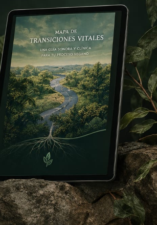

Cargando reflexión...
Fecha
Lic. Mauro García
Título de la reflexión
🔒
Reflexión Exclusiva • Psicología Verde
Continúa leyendo esta reflexión completa
Esta publicación forma parte del espacio de divulgación clínica en profundidad. Podés desbloquearla con un micro-aporte voluntario o ingresar directamente con tu cuenta de paciente.
☕
Espacio de Divulgación Ética e Independiente
¿Te aportó valor o resonó con vos esta lectura?
Podés invitar un cafecito o realizar un micro-aporte voluntario para sostener este espacio de psicoeducación en salud mental y antiespecismo.
¿Cómo continuar a partir de esta lectura?
Herramientas y acompañamiento para tu proceso

Herramienta digital de autogestión
Mapa de Transiciones Vitales
Audioguía clínica y cuadernillos de ejercicios prácticos en PDF.
💬
¿Preferís trabajarlo directamente conmigo?
Podemos abordar tu situación en un Encuentro Único de Orientación enfocado y libre de juicios.